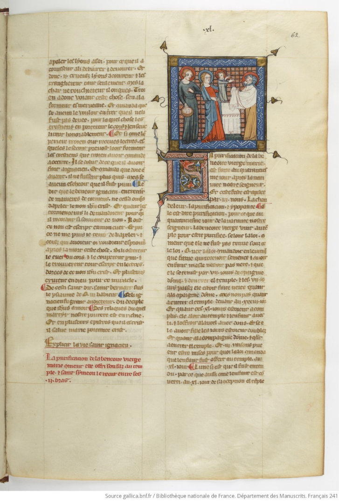
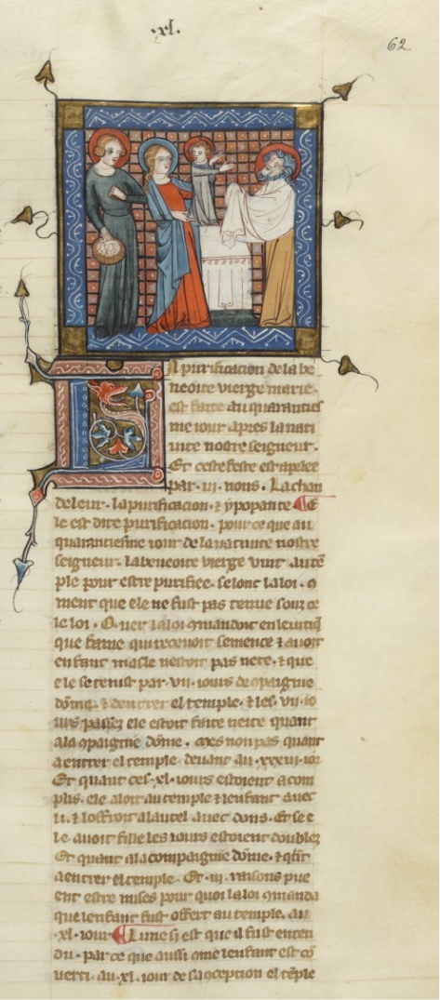
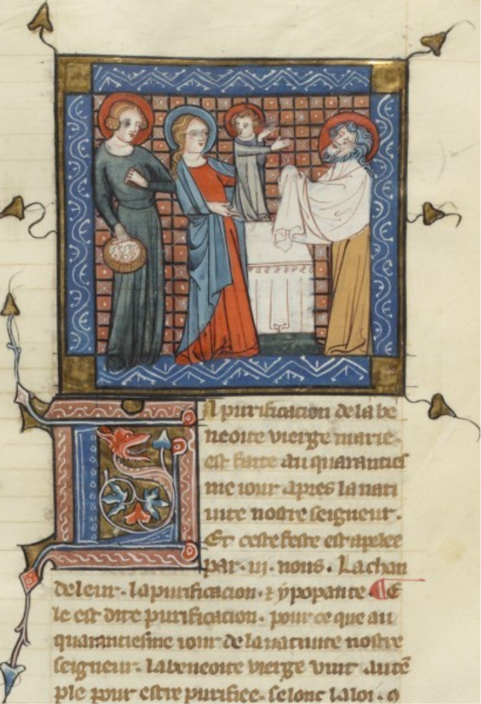
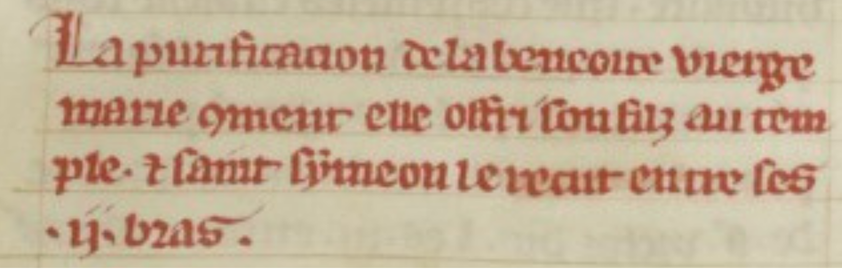
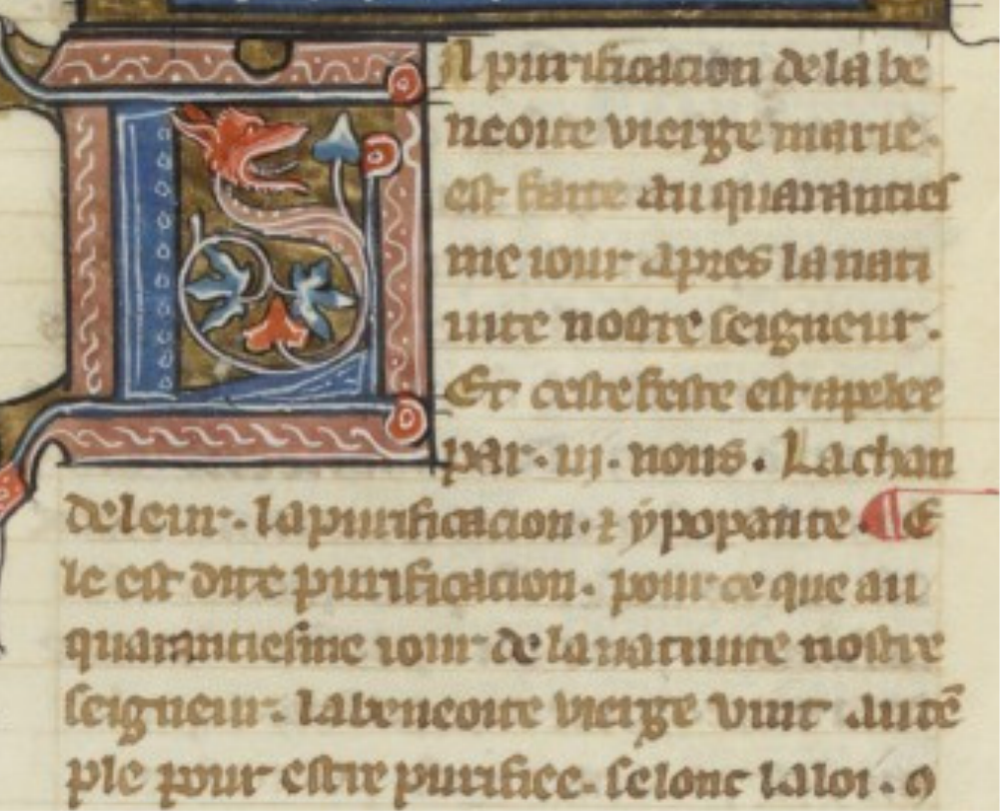
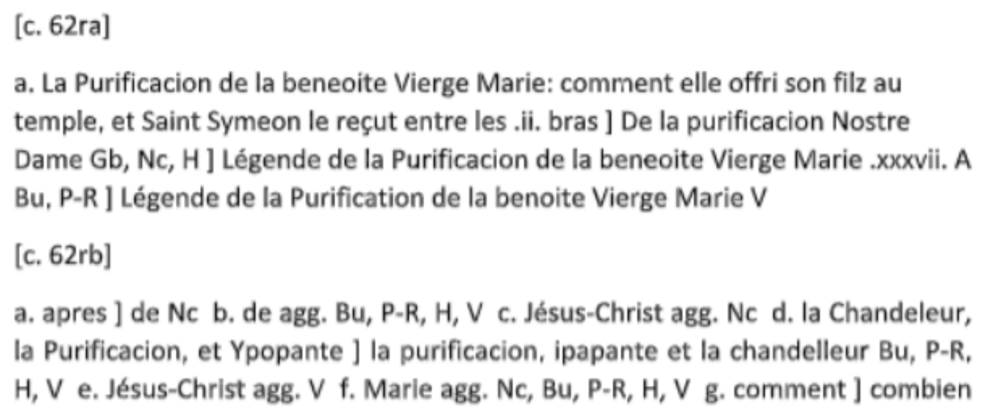
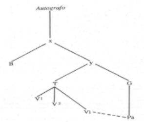
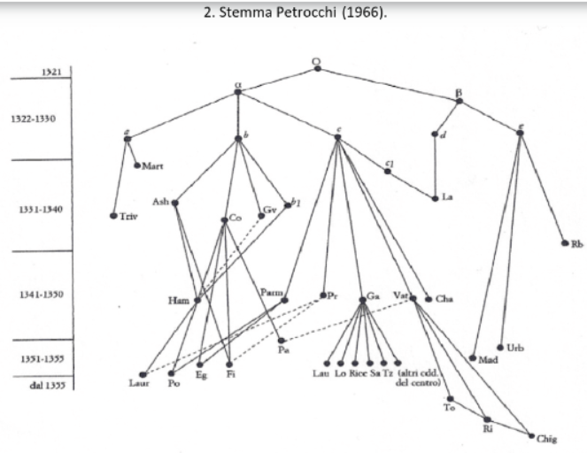
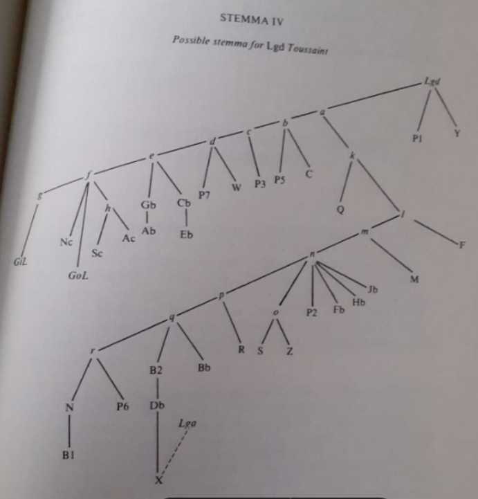

FRA3826 | EDN6001
19 novembre 2026
Philologie
Philos: (gr. φίλος) aimé, cher; agréable, qui plaît; qui aime; (rare et en poésie) aimant, bienveillant.
Logos: (gr. λόγος) parole; une parole, un mot; une proposition; mention; bruit qui court; entretien; récit; composition en prose; belles-lettres, sciences, études; sujet d’entretien, d’étude ou de discussion; raison, faculté de raisonner; raison, bon sens; raison intime; exercice de la raison; compte-rendu, justification, explication; opinion au sujet d’une chose à venir, présomption, attente; post. religieux et philosophique comme la raison divine ou le Verbe divin
Édition diplomatique
Transcription, dite sèche, lorsqu’on transcrit un texte en le copiant en tan que tel sans aucune modification





[c. 62rb] La purificacion de la beneoite vierge marie qment elle offri son filz au temple. z saint sÿmeon le reveut entre ses .ii. bras
La purificacion de la beneoite vierge marie est faite au quarantiesme iour apres la nativite nostre seigneur. Et ceste feste est apelee par .iii. nons. La chandeleur. la purificacion. z ypopante. Ele est dite purificacion. pour ce que au quarantiesme iour de la nativite nostre seigneur: la beneoite vierge vint au tẽple pour estre purifiee. selonc la loi,..
Édition semi-diplomatique ou interprétative
La transcription présente des modifications, notamment orthographiques, pour insérer des dissimilations (u/v, i/j) ou pour réintégrer des accents pour désambiguïser les homographes.
[c. 62rb] La purificacion de la beneoite Vierge Marie comment elle offri son filz au temple, et saint Sÿmeon le recut entre ses ii bras
La Purificacion de la beneoite Vierge Marie est faite au quarantiesme jour apres la Nativité nostre Seigneur. Et ceste feste est apelee par .iii. nons: la Chandeleur, la Purificacion, et Ypopante. Ele est dite Purificacion, pour ce que au quarantiesme jour de la Nativité nostre Seigneur , la beneoite Vierge vint au temple pour estre purifiee, selonc la loi,..
Édition critique
Après les études des différents témoins, on constitue un texte, reposant sur un document spécifique (Joseph Bédier 1864-1938), ou texte visant la reconstitution d’un texte “originel” (Karl Lachmann 1793-1851). Ce texte est accompagné d’un apparat critique enregistrant les variantes

Édition génitique
Ensemble des manuscrits du vivant de l’auteur ressemblé et étudié en fonction de la restitution de l’évolution du texte.
Recensio: recensement de tous les manuscrits (ms/mss) ou éditions existantes d’une œuvre.
Conspectus Siglorum et Fontium: liste des sigles des mss et éditions utilisées dans l’apparat, avec leurs informations et leur description.
Collatio: l’étude des variantes.
Stemma codicum: reconstruction de l’arbre généalogique d’une œuvre en établissant la distance et les relations parmi les témoins.



Apparat critique: l’ensemble des variantes qui peuvent être recueillies à partir des témoins choisis pour composer une édition.
Omisit et Addidit: Un témoin peut présenter des omissions ou des ajouts par rapport à d’autres témoins. Les omissions peuvent être dues à des erreurs d’inattention ou à un acte conscient. Les ajouts peuvent être faits pour clarifier ou ajouter des informations nouvelles ou implicites.
Lacune: similaire à l’omission, mais dans ce cas, la partie du texte est plus importante, et pas seulement un mot ou une petite partie
Glossaire: pour les textes les plus anciens, on fournit un glossaire des mots ou expressions qui ne sont plus utilisés ou ont évolués, afin de faciliter la compréhension.
XML-TEI
eXtensible Markup Language - Text Encoding Initiative
Découvrons les Guidelines de la TEI.